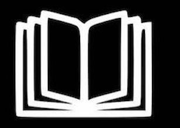

Welcome
Logout
I
II
III
IV
Updates
Covid-19 Vaccination Camp was inaugurated by the Honourable Minister Thiru. Ma. Subramanian on 6th September 2021
AKSHAYASRI III Year EEE got 2nd place in Marathon(10 km) conducted by Government of Tamil Nadu to create awareness on Corona on 27th August 2021.
Online application for Laxmi Charities will be opened by 4th August 2021. Interested Students can contact their Class Advisors
Dr.R.Arivazhagan,Department of Civil Engineering has published a patent titled "A Method for Repelling Water from Hydrophobic Soil"
B.Tech Artificial Intelligence and Data Science has been approved for MSEC by AICTE from the academic year 2021-22 (Intake 60)
Vaccines for all
Webinar on Accelerator - Opportunities for Early Stage Entrepreneurs by Institution's Innovation Cell on 17th June 2021
MSEC Students have secured 17th placeamong 150 m-BAJA participants in the Manufacturing Event
Vigyan 21 series - Webinar on Cloud Computing by the department of Computer Science and Engineering on 17th April 2021
International Conference on Emerging Technologies and Adaptation in Geotechnical Engineering by the department of Civil Engineering on 8th May 2021
International Webinar on Set Your Horizon - Career Guidance by the Department of Mechanical Engineering on 2nd April 2021
International Conference on Advanced Scientific Developments to Sustain Global Challenges by the Department of Mechanical Engineering on 10th April 2021
International Conference on Information Systems and Software Engineering by the Department of CSE on 23rd and 24th April 2021
International Conference in Advancements & Recent Trends in Electronics & Communications by the Department of ECE on 7th May 2021
National Conference on Advancement in Emerging Technologies by the Department of ECE on 10th April 2021
Freshers are Shining
International Conference on Power Electronics, E-Vehicles and Green Energy by the Department of EEE on 3rd April 2021
NIRF 2021
Placement 2020
University Rank holders - 2020 Batch
MSEC is among the top 10% Colleges that excelled in AMCAT for the third consequtive Year
MSEC is recognised for the significant contribution in Jal Shakti Abhiyan by AICTE
Innovation - Low cost portable ventilator for COVID-19 patients by ECE Students
SR Sankar Narayanan developed a web application - Corneese - COVID-19 tracker
Platinum Ranking in AICTE - CII Survey of Industry Linked Technical Institutes-2018
Platinum Ranking in AICTE - CII Survey of Industry Linked Technical Institutes-2017
MSEC received the Best Engineering College Award
MSEC Alumni makes it to the Forbes' list
EEE Department Students S.Vasudharini and D.Praveen won the title award at Cognizant's "The BiG Idea 2k17" Contest
Dr.K.S Babai received the Honorary ISTE Fellowship